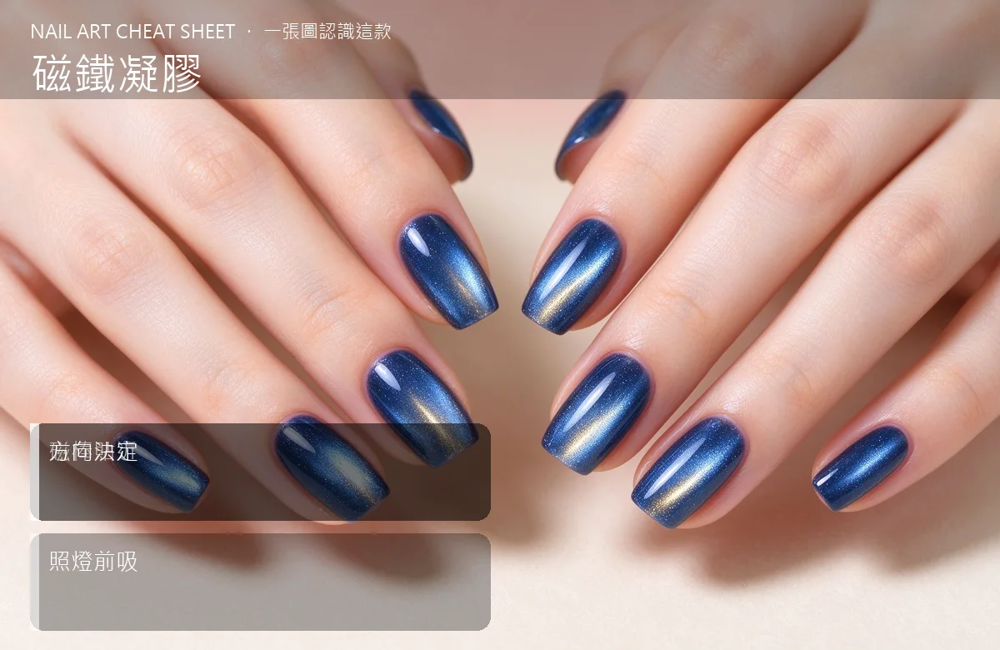

美甲磁鐵凝膠是什麼？中階入門攻略
磁鐵凝膠是貓眼前置的基本功：磁棒怎麼放，光帶就怎麼跑，玩熟了能做各種特效。
磁鐵凝膠原理與辨識重點：美甲師不說的磁棒貼近
磁鐵凝膠跟一般色膠長得像，但裡面多混了細小的磁粉。上完色膠還沒照燈前，把磁棒靠近甲面，磁粉會被磁力吸著排列，形成一條光帶、一個光環、或一片珠光流動感。磁棒距離、角度、停留時間，都決定最後長出來的樣子。貓眼是它的其中一種效果而已。
誰適合做磁鐵凝膠？貓眼前置對號入座
已經做過貓眼、想再玩出花樣的人；韓系沙龍師必備，因為現在客人指定貓眼的比例愈來愈高。
磁鐵凝膠美甲施作步驟：磁棒應用
上好底色照燈 → 薄上磁鐵色膠 → 不照燈，立刻拿磁棒靠近甲面上方 → 依照想做的效果擺角度（直條、斜光、寬光、光圈）→ 定住 5–10 秒 → 馬上照燈固定 → 再補一層封層。
磁鐵凝膠優缺點分析：美甲持久度與傷甲評估
| 優點 | 說明 |
|---|---|
| 效果變化多、質感高，同一罐膠可以做出光帶、光圈、貓眼多種效果，超划算。 | 是韓系流派的招牌，中階就能上手 |
| 缺點 | 說明 |
| 磁棒要另外買、角度要練，新手常吸到一半放開手就散掉。 | 前置與最怕『吸完沒立刻照燈』——磁粉還在膠裡，你手一拿開、它自己又散了。吸好定住數秒就立刻送進燈，不能拖。沒顧好會打折 |

磁鐵凝膠新手雷區：方向決定與常見錯誤
注意：最怕『吸完沒立刻照燈』——磁粉還在膠裡，你手一拿開、它自己又散了。吸好定住數秒就立刻送進燈，不能拖。
磁鐵凝膠和其他美甲做法的差別比較
磁鐵膠常跟深色底疊（黑底上吸月光貓眼），也常跟鏡面粉、金箔混著玩；跟漸層搭就是現在最紅的『貓眼漸層』。
磁鐵凝膠美甲常見問題 FAQ
Q：一定要用專用磁棒嗎？ A：原廠磁棒設計最夠力。自家用冰箱磁鐵吸不動或效果差很多，建議投資一支多邊角磁棒。
Q：光帶不亮怎麼辦？ A：多半是膠太厚或磁棒距離太遠。薄上膠、磁棒貼近甲面上方 2–3 mm，光帶會明顯很多。